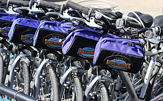

Bicycle Rentals
Governors Island has 5 miles of car-free biking. The bike rental concession is operated by Bike and Roll; there are locations to rent bikes nearby the Post Hospital (Building 515) and The National Park Service (Building 140).